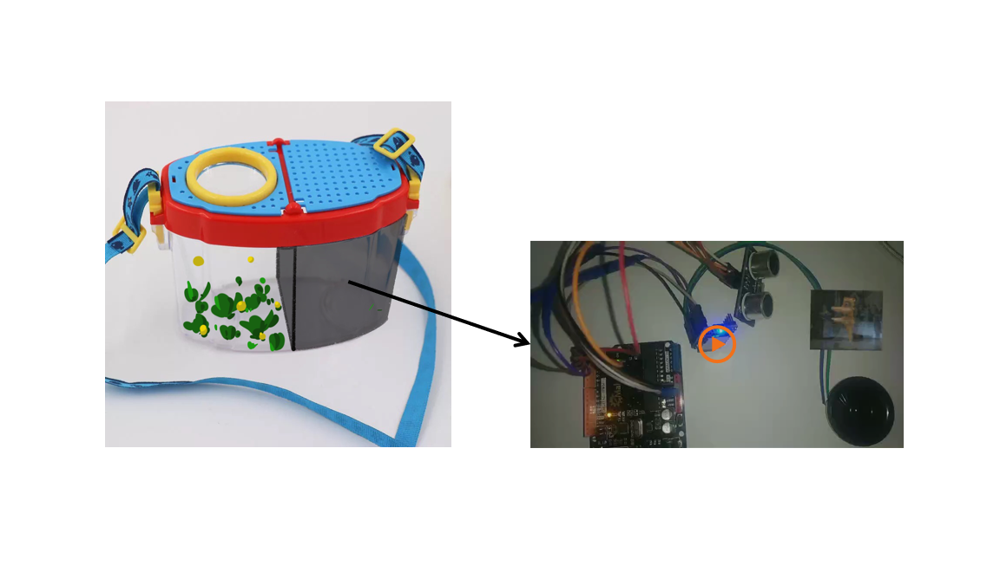

萤火
Basic Info
Type: Video / Infographic
Tool: AI / PS / AE / AU
Team member: 3
Work in charge: Visual Style / Production / Arduino

Requirement & Purpose
Fireflies were the best friends of childhood for many people on summer nights. But now, in the concrete and steel of the city, children can hardly see the flickering fireflies flying in the dark
If we vote for an insect to represent childhood, I believe that firefly must be the first one. I believe that not only children but also adults must have a firefly dream in their heart!
But where did the beautiful fireflies go? How come we never see...